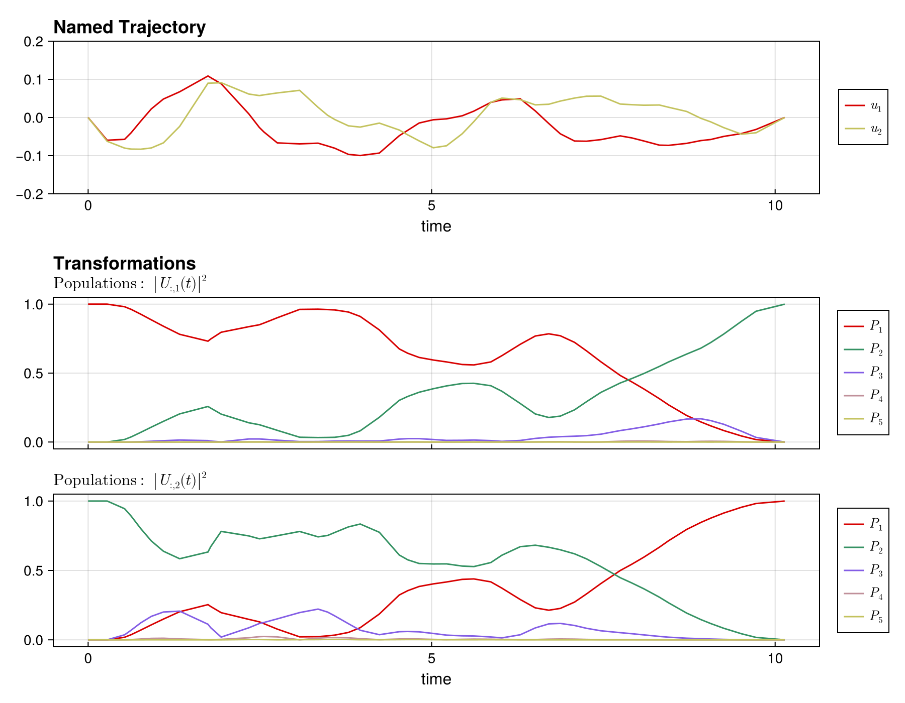
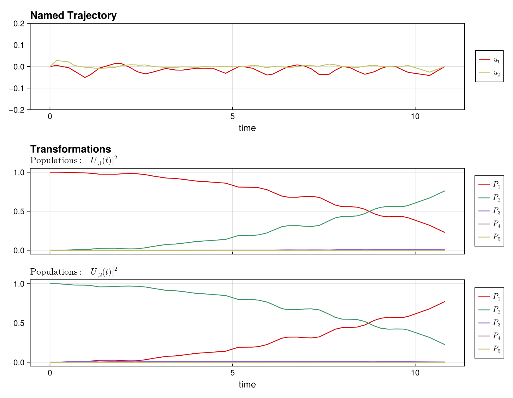

Multilevel Transmon
In this example we will look at a multilevel transmon qubit with a Hamiltonian given by
\[\hat{H}(t) = -\frac{\delta}{2} \hat{n}(\hat{n} - 1) + u_1(t) (\hat{a} + \hat{a}^\dagger) + u_2(t) i (\hat{a} - \hat{a}^\dagger)\]
where $\hat{n} = \hat{a}^\dagger \hat{a}$ is the number operator, $\hat{a}$ is the annihilation operator, $\delta$ is the anharmonicity, and $u_1(t)$ and $u_2(t)$ are control fields.
We will use the following parameter values:
\[\begin{aligned} \delta &= 0.2 \text{ GHz}\\ \abs{u_i(t)} &\leq 0.2 \text{ GHz}\\ T_0 &= 10 \text{ ns}\\ \end{aligned}\]
For convenience, we have defined the TransmonSystem function in the QuantumSystemTemplates module, which returns a QuantumSystem object for a transmon qubit. We will use this function to define the system.
Setting up the problem
To begin, let's load the necessary packages, define the system parameters, and create a QuantumSystem object using the TransmonSystem function.
using Piccolo
using SparseArrays
using Random;
Random.seed!(123);
using CairoMakie
# define the time parameters
T₀ = 10 # total time in ns
N = 50 # number of time steps
Δt = T₀ / N # time step
times = collect(range(0, T₀, length = N))
# define the system parameters
levels = 5
δ = 0.2
# add a bound to the controls
u_bound = [0.2, 0.2]
ddu_bound = 1.0
# create the system
sys = TransmonSystem(drive_bounds = u_bound, levels = levels, δ = δ)
# let's look at the drives of the system
get_drives(sys)[1] |> sparse5×5 SparseArrays.SparseMatrixCSC{ComplexF64, Int64} with 8 stored entries:
⋅ 6.28319+0.0im ⋅ ⋅ ⋅
6.28319+0.0im ⋅ 8.88577+0.0im ⋅ ⋅
⋅ 8.88577+0.0im ⋅ 10.8828+0.0im ⋅
⋅ ⋅ 10.8828+0.0im ⋅ 12.5664+0.0im
⋅ ⋅ ⋅ 12.5664+0.0im ⋅ Since this is a multilevel transmon and we want to implement an, let's say, $X$ gate on the qubit subspace, i.e., the first two levels we can utilize the EmbeddedOperator type to define the target operator.
# define the target operator
op = EmbeddedOperator(:X, sys)
# show the full operator
op.operator |> sparse5×5 SparseArrays.SparseMatrixCSC{ComplexF64, Int64} with 2 stored entries:
⋅ 1.0+0.0im ⋅ ⋅ ⋅
1.0+0.0im ⋅ ⋅ ⋅ ⋅
⋅ ⋅ ⋅ ⋅ ⋅
⋅ ⋅ ⋅ ⋅ ⋅
⋅ ⋅ ⋅ ⋅ ⋅ We can then create a pulse, trajectory, and optimization problem using the new API:
# create a random initial pulse
initial_controls = 0.1 * randn(2, N)
pulse = ZeroOrderPulse(initial_controls, times)
# create a unitary trajectory with the embedded operator as goal
qtraj = UnitaryTrajectory(sys, pulse, op)
# create the optimization problem
qcp = SmoothPulseProblem(qtraj, N; ddu_bound = ddu_bound, Q = 100.0, R = 1e-2)QuantumControlProblem
├─ UnitaryTrajectory · ZeroOrderPulse · HermitianExponentialIntegrator, DerivativeIntegrator, DerivativeIntegrator
│
├─ System
│ dim=5 drives=2
│
├─ Trajectory
│ N=50 T=10.000 Δt∈[0.000204, Inf]
│ Ũ⃗ (50) ±[1.0, 1.0, 1.0, … (50 total)] ✓ state
│ Δt ( 1) [0.000204, Inf] ✓ timestep
│ t ( 1) · state
│ u ( 2) ±[0.2, 0.2] ✓ control
│ du ( 2) · control
│ ddu ( 2) ±[1.0, 1.0] ✓ control
│
├─ Goal
│ EmbeddedOperator on [5], subspace dim 2
│
├─ Objective total = 64.55 @ current x
│ KnotPointObjective w=1 61.06
│ QuadraticRegularizer(:u) w=1 8.768e-04
│ QuadraticRegularizer(:du) w=1 0.04841
│ QuadraticRegularizer(:ddu) w=1 3.438
│ NullObjective w=1 0
│
├─ Constraints 1/13 violated at x₀
│ [dyn] HermitianExponentialIntegrator ✗ (‖c‖∞ = 0.1529)
│ [dyn] DerivativeIntegrator ✓ (‖c‖∞ = 2.776e-17)
│ [dyn] DerivativeIntegrator ✓ (‖c‖∞ = 2.220e-16)
│ [eq] EqualityConstraint ✓ (no eval)
│ [eq] EqualityConstraint ✓ (no eval)
│ [eq] EqualityConstraint ✓ (no eval)
│ [bnd] BoundsConstraint ✓
│ [bnd] BoundsConstraint ✓
│ [bnd] BoundsConstraint ✓
│ [bnd] BoundsConstraint ✓
│ [bnd] BoundsConstraint ✓
│ [eq] TimeConsistencyConstraint ✓ (no eval)
│ [eq] EqualityConstraint ✓ (no eval)
│
└─ Status
variables: 2900 (2700 bounded)
equality: 129659
inequality: 0
F (raw) = 0.389387
Hint: show_problem(qcp; detail=:full) for pulse plot + sparsity
Solving the problem
solve!(qcp; max_iter = 50)This is MadNLP version v0.9.2, running with MUMPS v5.8.2
Number of nonzeros in constraint Jacobian............: 57183
Number of nonzeros in Lagrangian Hessian.............: 250386
Total number of variables............................: 2845
variables with only lower bounds: 50
variables with lower and upper bounds: 2646
variables with only upper bounds: 0
Total number of equality constraints.................: 2695
Total number of inequality constraints...............: 0
inequality constraints with only lower bounds: 0
inequality constraints with lower and upper bounds: 0
inequality constraints with only upper bounds: 0
iter objective inf_pr inf_du inf_compl lg(mu) lg(rg) alpha_pr ir ls
0 6.1197140e+01 2.84e+00 3.03e+00 1.99e+00 -1.0 - 0.00e+00 1 0
1 5.9148483e+01 2.83e+00 2.78e+01 2.14e+00 1.8 0.0 1.87e-03 1 1h
2 2.7347285e+01 2.61e+00 3.78e+01 1.97e+00 -6.0 - 7.84e-02 1 1h
3 3.0454578e+01 1.74e+00 8.83e+02 6.60e+00 0.4 0.4 3.33e-01 1 1h
4 3.0830268e+01 1.59e+00 7.91e+02 5.80e+00 0.0 1.8 8.71e-02 1 1h
⋮
46 1.4804821e-02 4.53e-03 7.34e+01 4.85e-05 -4.3 -2.0 5.00e-01 1 2h
47 1.4465413e-02 6.26e-06 1.02e+00 4.47e-05 -4.3 1.1 1.00e+00 1 1h
48 1.4615582e-02 1.91e-08 9.55e-04 4.47e-05 -4.3 0.6 1.00e+00 1 1h
49 1.4569328e-02 1.59e-07 9.25e-04 4.47e-05 -4.3 0.2 1.00e+00 2 1h
iter objective inf_pr inf_du inf_compl lg(mu) lg(rg) alpha_pr ir ls
50 1.4432604e-02 1.30e-06 8.79e-04 4.47e-05 -4.3 -0.3 1.00e+00 1 1h
Number of Iterations....: 50
(scaled) (unscaled)
Objective...............: 1.4432603690668610e-02 1.4432603690668610e-02
Dual infeasibility......: 8.7893230097071517e-04 8.7893230097071517e-04
Constraint violation....: 1.2969204423729508e-06 1.2969204423729508e-06
Complementarity.........: 4.4723375250459915e-05 4.4723375250459915e-05
Overall NLP error.......: 8.7893230097071517e-04 8.7893230097071517e-04
Number of objective function evaluations = 75
Number of objective gradient evaluations = 51
Number of constraint evaluations = 75
Number of constraint Jacobian evaluations = 51
Number of Lagrangian Hessian evaluations = 50
Number of KKT factorizations = 127
Number of KKT backsolves = 61
Total wall secs in initialization = 0.027 s
Total wall secs in linear solver = 1.357 s
Total wall secs in NLP function evaluations = 21.323 s
Total wall secs in solver (w/o init./fun./lin. alg.) = 1.894 s
Total wall secs = 24.601 s
EXIT: Maximum Number of Iterations Exceeded.
[ Info: Saved cache to multilevel_transmon_7292678.jld2After optimization, we can check the fidelity in the subspace:
fid = fidelity(qcp)
println("Fidelity: ", fid)Fidelity: 0.9999778978513727Leakage suppression
As can be seen from multilevel systems, there can be substantial leakage into higher energy levels during the evolution. To mitigate this, Piccolo provides options to add leakage suppression via the PiccoloOptions type.
To implement leakage suppression, pass leakage_constraint=true and configure the leakage parameters:
# create a leakage suppression problem
qcp_leakage = SmoothPulseProblem(
qtraj,
N;
ddu_bound = ddu_bound,
Q = 100.0,
R = 1e-2,
piccolo_options = PiccoloOptions(
leakage_constraint = true,
leakage_constraint_value = 1e-2,
leakage_cost = 1e-2,
),
)
# solve the problem
solve!(qcp_leakage; max_iter = 50)constructing SmoothPulseProblem [UnitaryTrajectory]
QuantumControlProblem
├─ UnitaryTrajectory · ZeroOrderPulse · HermitianExponentialIntegrator, DerivativeIntegrator, DerivativeIntegrator
│
├─ System
│ dim=5 drives=2
│
├─ Trajectory
│ N=50 T=10.139 Δt∈[0.000207, Inf]
│ Ũ⃗ (50) ±[1.0, 1.0, 1.0, … (50 total)] ✓ state
│ Δt ( 1) [0.000207, Inf] ✓ timestep
│ t ( 1) · state
│ u ( 2) ±[0.2, 0.2] ✓ control
│ du ( 2) · control
│ ddu ( 2) ±[1.0, 1.0] ✓ control
│
├─ Goal
│ EmbeddedOperator on [5], subspace dim 2
│
├─ Objective total = 0.05466 @ current x
│ KnotPointObjective w=1 2.210e-03
│ QuadraticRegularizer(:u) w=1 2.957e-04
│ QuadraticRegularizer(:du) w=1 1.562e-03
│ QuadraticRegularizer(:ddu) w=1 0.046
│ NullObjective w=1 0
│ KnotPointObjective w=1 4.594e-03
│
├─ Constraints 1/14 violated at x₀
│ [dyn] HermitianExponentialIntegrator ✗ (‖c‖∞ = 0.1532)
│ [dyn] DerivativeIntegrator ✓ (‖c‖∞ = 1.388e-17)
│ [dyn] DerivativeIntegrator ✓ (‖c‖∞ = 2.776e-17)
│ [ineq] Terminal fidelity bound on :Ũ⃗ ✓ (no eval)
│ [eq] EqualityConstraint ✓ (no eval)
│ [eq] EqualityConstraint ✓ (no eval)
│ [eq] EqualityConstraint ✓ (no eval)
│ [bnd] BoundsConstraint ✓
│ [bnd] BoundsConstraint ✓
│ [bnd] BoundsConstraint ✓
│ [bnd] BoundsConstraint ✓
│ [bnd] BoundsConstraint ✓
│ [eq] TimeConsistencyConstraint ✓ (no eval)
│ [eq] EqualityConstraint ✓ (no eval)
│
└─ Status
variables: 2900 (2700 bounded)
equality: 129659
inequality: 24
F (raw) = 0.999978
Hint: show_problem(qcp; detail=:full) for pulse plot + sparsity
┌ Warning: Optimizer and rollout disagree at the final time.
│
│ relative divergence = 0.0251 (tolerance 0.005)
│ |F_collocation - F_rollout| = 0.000146 (tolerance 0.0001)
│
│ `fidelity(qcp.qtraj)` — the ODE re-rollout — is the trustworthy number. The
│ optimizer's own objective was evaluated on the collocation solution, which is a
│ different waveform, so any fidelity taken from it is not what this pulse does.
│
│ Usual causes:
│ • Pulse/integrator mismatch. A spline pulse under a piecewise-constant
│ integrator is the common case: the interpolation the optimizer constrained is
│ not the one being integrated. The templates refuse such a pairing
│ unless it is declared (`allow_basis_approximation = true`, #375), so
│ this arises when an approximation was declared or the problem was
│ assembled by hand.
│ • Collocation grid too coarse for the dynamics — increase the number of knots.
│ • The solve stopped before the dynamics constraints converged, so the
│ collocation iterate is not yet a trajectory of any pulse.
│
│ Silence: `sync_trajectory!(qcp; check_divergence = false)`, or raise
│ `ROLLOUT_DIVERGENCE_RTOL[]` / `ROLLOUT_FIDELITY_ATOL[]`.
└ @ Piccolo.Control.QuantumControlProblems ~/work/Piccolo.jl/Piccolo.jl/src/control/problems.jl:890
This is MadNLP version v0.9.2, running with MUMPS v5.8.2
Number of nonzeros in constraint Jacobian............: 88445
Number of nonzeros in Lagrangian Hessian.............: 250386
Total number of variables............................: 2845
variables with only lower bounds: 50
variables with lower and upper bounds: 2646
variables with only upper bounds: 0
Total number of equality constraints.................: 2695
Total number of inequality constraints...............: 1200
inequality constraints with only lower bounds: 0
inequality constraints with lower and upper bounds: 0
inequality constraints with only upper bounds: 1200
iter objective inf_pr inf_du inf_compl lg(mu) lg(rg) alpha_pr ir ls
0 3.3567007e-02 3.44e-01 1.00e+00 1.99e+00 -1.0 - 0.00e+00 1 0
1 8.4575570e-01 3.44e-01 1.43e+02 2.05e+00 1.9 - 3.01e-04 1 1h
2 7.6185775e-01 3.37e-01 1.40e+02 2.02e+00 -6.1 - 1.90e-02 1 1h
3 6.7097635e-01 3.23e-01 1.34e+02 1.97e+00 -0.2 - 4.21e-02 2 1h
4 1.4797653e+00 2.98e-01 1.77e+02 2.07e+00 -0.2 - 7.71e-02 1 1h
⋮
46 1.7936968e+01 8.76e-03 5.74e+00 3.99e-03 -1.8 -0.1 4.08e-01 1 1h
47 1.7610266e+01 3.94e-01 1.39e+04 3.98e-03 -1.4 -0.5 1.53e-01 1 1h
48 1.7149368e+01 3.22e-01 6.87e+03 3.91e-03 -7.7 -0.1 1.88e-01 1 1h
49 1.6158498e+01 6.68e-02 1.68e+04 5.57e-02 -1.9 -0.6 7.65e-01 1 1h
iter objective inf_pr inf_du inf_compl lg(mu) lg(rg) alpha_pr ir ls
50 1.5877276e+01 2.41e-02 6.53e-01 1.25e-02 -1.9 -0.2 1.00e+00 1 1h
Number of Iterations....: 50
(scaled) (unscaled)
Objective...............: 1.5877275648003906e+01 1.5877275648003906e+01
Dual infeasibility......: 6.5321122786443386e-01 6.5321122786443386e-01
Constraint violation....: 2.4075391773484833e-02 2.4075391773484833e-02
Complementarity.........: 1.2513683113516942e-02 1.2513683113516942e-02
Overall NLP error.......: 6.5321122786443386e-01 6.5321122786443386e-01
Number of objective function evaluations = 51
Number of objective gradient evaluations = 51
Number of constraint evaluations = 51
Number of constraint Jacobian evaluations = 51
Number of Lagrangian Hessian evaluations = 50
Number of KKT factorizations = 118
Number of KKT backsolves = 52
Total wall secs in initialization = 0.025 s
Total wall secs in linear solver = 1.500 s
Total wall secs in NLP function evaluations = 20.681 s
Total wall secs in solver (w/o init./fun./lin. alg.) = 0.325 s
Total wall secs = 22.532 s
EXIT: Maximum Number of Iterations Exceeded.
[ Info: Saved cache to multilevel_transmon_leakage_7292678.jld2The leakage suppression adds:
- An L1-norm cost on populating leakage levels (drives populations toward zero)
- A constraint that keeps leakage below the specified threshold
fid_leakage = fidelity(qcp_leakage)
println("Fidelity with leakage suppression: ", fid_leakage)Fidelity with leakage suppression: 0.841160863991306Visualizing Results
Piccolo provides plotting utilities to visualize the unitary evolution. First, without leakage suppression:
plot_unitary_populations(get_trajectory(qcp); fig_size = (900, 700))
And with leakage suppression — you should see the population staying mostly within the computational subspace (first two levels):
plot_unitary_populations(get_trajectory(qcp_leakage); fig_size = (900, 700))
Summary
This tutorial demonstrated:
- Using
TransmonSystemto create a realistic multilevel transmon system - Using
EmbeddedOperatorto define gates on a subspace - Creating
UnitaryTrajectorywithZeroOrderPulse - Using
SmoothPulseProblemto set up the optimization - Adding leakage suppression via
PiccoloOptions
For more details on:
- Problem templates: See SmoothPulseProblem
- Leakage suppression: See Leakage Suppression
- Quantum systems: See Transmon Qubits
This page was generated using Literate.jl.